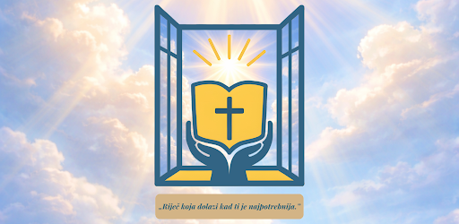
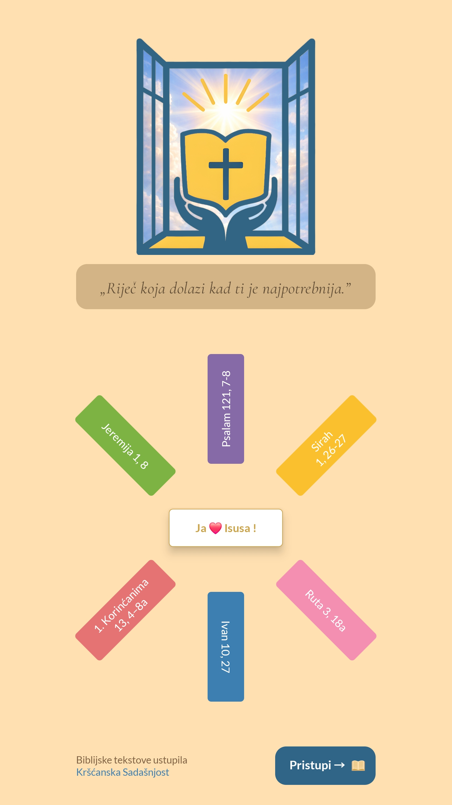
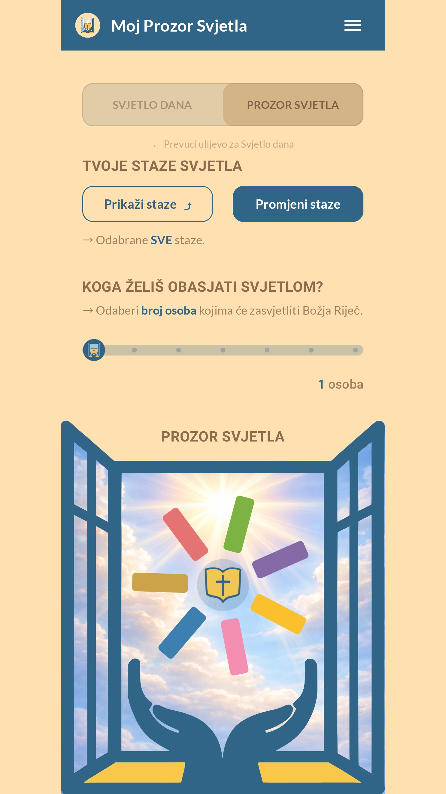
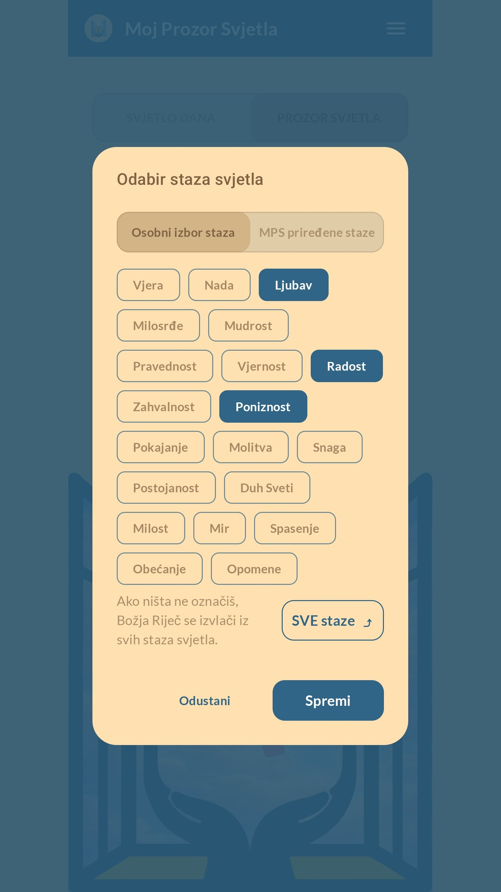
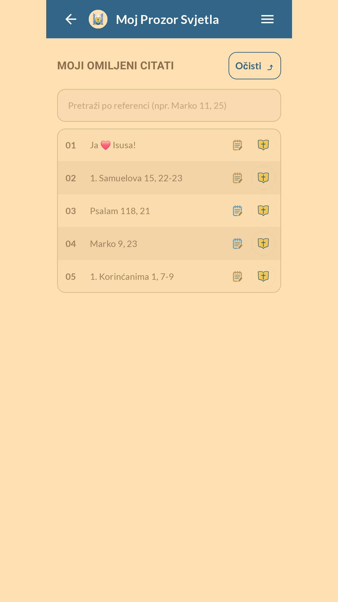
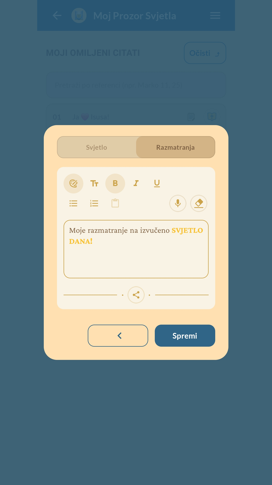
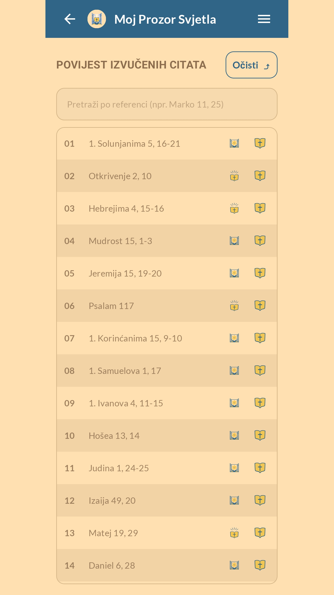

<main id="top">
    <section class="hero">
        <div class="wrap">
            <div class="heroGrid">
                <div>
                    <div class="kicker">📖 Katolička mobilna aplikacija • Svjetlo Dana • Razmatranja</div>
                    <h1>Moj Prozor Svjetla</h1>
                    <p class="lead">
                        Kršćanska, katolička aplikacija koja pomaže svakodnevno čitati i razmatrati Božju Riječ — jednostavno,
                        ugodno i “u džepu”, baš onda kad je najpotrebnije.
                    </p>

                    <div class="ctaRow" id="preuzmi">
                        <!-- Zamijeni link kad budeš imao Play Store URL -->
                        <a class="btn primary" href="#" onclick="alert('Dodaj Play Store link kad bude spreman (u index.html: zamijeni href).'); return false;">
                            ▶︎ Otvori na Google Play
                        </a>
                        <a class="btn" href="#galerija">📷 Pogledaj slike</a>
                        <a class="btn" href="/pravila-privatnosti" title="Pravila privatnosti">🔒 Pravila privatnosti</a>
                    </div>
                </div>

                <div class="heroCard" aria-label="Istaknuta grafika">
                    
                </div>
            </div>
        </div>
    </section>

    <section class="section" id="znacajke">
        <div class="wrap">
            <h2>✨ Što donosi MPS aplikacija?</h2>
            <p>
                Svaki dan donosi novu priliku za ohrabrenje, smjer i mir. U aplikaciji te čekaju citati, “staze” tema,
                omiljeni citati i razmatranja — uz mogućnost glasovnog unosa bilješki.
            </p>

            <div class="features">
                <div class="f"><b>📖 Svjetlo Dana</b><span>Biblijski citat za svaki dan, uz jutarnji podsjetnik.</span></div>
                <div class="f"><b>🪟 Prozor Svjetla</b><span>Interaktivno “izvlačenje” Božje Riječi među ~1000 citata.</span></div>
                <div class="f"><b>🛤 Staze Svjetla</b><span>20 tema (staza) + gotovi paketi koje je priredio MPS.</span></div>
                <div class="f"><b>❤️ Omiljeni citati</b><span>Spremi citate za kasnije čitanje i razmatranje.</span></div>
                <div class="f"><b>🕯 Razmatranja</b><span>Bilješke uz bogati editor + glasovni unos (diktiranje).</span></div>
                <div class="f"><b>🕊 Povijest citata</b><span>Jednostavan povratak do ~200 citata unatrag.</span></div>
            </div>

            <div class="divider"></div>

            <p>
                ❤️ Posebno mjesto zauzima citat <b>„Ja ❤️ Isusa“</b> — rijedak i radostan trenutak kad se “izvuče”.
            </p>
        </div>
    </section>

    <section class="section" id="galerija">
        <div class="wrap">
            <h2>📷 Galerija</h2>
            <p>Pogledaj kako izgleda aplikacija kroz najvažnije ekrane.</p>

            <div class="gallery" role="list">
                <div class="shot" role="listitem" data-src="assets/img/screenshot_01.png" data-cap="Splash / Uvod">
                    
                    <div class="cap">Splash / Uvod</div>
                </div>
                <div class="shot" role="listitem" data-src="assets/img/screenshot_02.png" data-cap="Svjetlo dana / Glavni ekran">
                    
                    <div class="cap">Svjetlo dana</div>
                </div>
                <div class="shot" role="listitem" data-src="assets/img/screenshot_03.jpg" data-cap="Prozor Svjetla – izvlačenje">
                    
                    <div class="cap">Prozor Svjetla</div>
                </div>
                <div class="shot" role="listitem" data-src="assets/img/screenshot_04.png" data-cap="Odabir staza svjetla">
                    
                    <div class="cap">Staze Svjetla</div>
                </div>
                <div class="shot" role="listitem" data-src="assets/img/screenshot_05.png" data-cap="Svjetlo za tebe – citat kartica">
                    
                    <div class="cap">Citat kartica</div>
                </div>
                <div class="shot" role="listitem" data-src="assets/img/screenshot_06.png" data-cap="Omiljeni citati">
                    
                    <div class="cap">Omiljeni</div>
                </div>
                <div class="shot" role="listitem" data-src="assets/img/screenshot_07.png" data-cap="Razmatranja – editor">
                    
                    <div class="cap">Razmatranja</div>
                </div>
                <div class="shot" role="listitem" data-src="assets/img/screenshot_08.png" data-cap="Unos teksta govorom">
                    
                    <div class="cap">Govorni unos</div>
                </div>
            </div>
        </div>
    </section>

    <section class="section" id="prica">
        <div class="wrap">
            <h2>✨ Kako je nastala MPS aplikacija?</h2>
            <p>
                Ideja je krenula prije više od 20 godina: citati iz Biblije bili su zapisani na male papiriće i nasumično se
                izvlačili u obitelji — kao pomoć u kušnjama, nedoumicama i traženju Božjeg smjera.
            </p>

            <div class="story">
                <div class="panel">
                    <h3>Za koga je aplikacija?</h3>
                    <ul>
                        <li>za osobnu molitvu i razmatranja u tišini</li>
                        <li>za svakodnevno življenje od Božje Riječi</li>
                        <li>za dnevno ohrabrenje i nadu</li>
                        <li>kad trebamo savjet od Boga u problemima i kušnjama</li>
                    </ul>
                </div>
                <div class="panel">
                    <h3>Što želimo postići?</h3>
                    <ul>
                        <li>da Božja Riječ bude dostupna “u džepu”</li>
                        <li>da se citati lako spremaju u omiljene</li>
                        <li>da razmatranja budu jednostavna (i glasom)</li>
                        <li>da ostane poruka: <b>„Riječ koja dolazi kad ti je najpotrebnija.“</b></li>
                    </ul>
                </div>
            </div>
        </div>
    </section>

    <section class="section" id="izvor">
        <div class="wrap">
            <h2>✨ Izvor biblijskih tekstova</h2>
            <p>
                Aplikacija koristi biblijske tekstove iz prijevoda Jeruzalemska Biblija, prevedene na hrvatski jezik od izdavača
                Kršćanska sadašnjost.
            </p>

            <div class="divider"></div>

            <p class="note">
                © Moj Prozor Svjetla. Svi zaštitni znakovi pripadaju svojim vlasnicima.
            </p>
        </div>
    </section>
</main>

{% include lightbox.html %}
